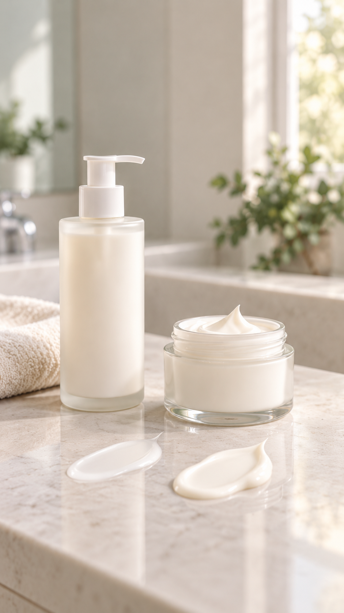
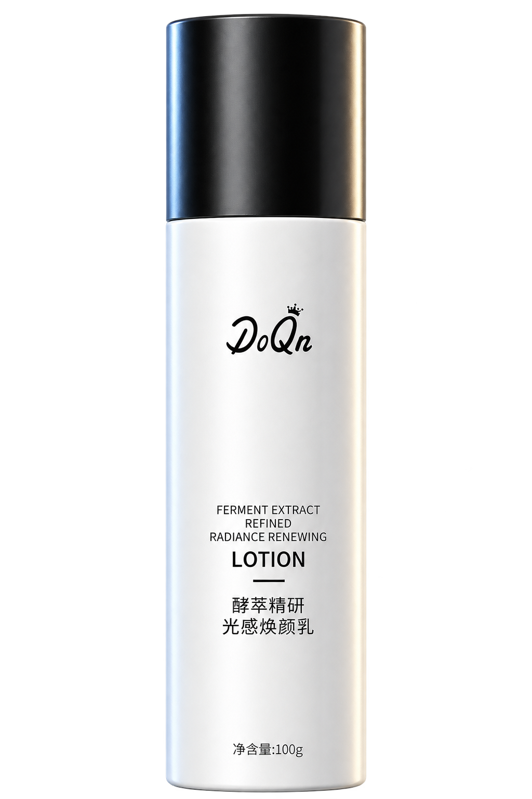

01 / 痘肌护理
屏障修护祛痘精华液
专注反复红肿痘的日常护理
96.67%30名成年受试者使用28天后，认同痘痘发红程度有所减轻*
*消费者自评问卷认同率，来源：XYJCR260612-665；非祛痘有效率。画面为视觉示意。了解这一系列 人物前后画面为视觉示意，非受试者实拍；96.67%为30名成年受试者28天自评认同率，非祛痘有效率。
01 / 痘肌护理
专注反复红肿痘的日常护理
人物前后画面为视觉示意，非受试者实拍；96.67%为30名成年受试者28天自评认同率，非祛痘有效率。

根据自己的肤感与护理需求，选择适合的水、精华、乳霜与面膜。
PRODUCT COLLECTION
每款产品单独呈现。依肤质、肤感和护理需求选择；价格以多光微信小程序实时展示为准。

*30 名成年受试者连续使用 28 天；与使用前相比。报告 XYJCR260612-665。
反复出油、粉刺与偶发痘的日常护理
规格 30 ml · 日常护肤使用
数据来自该产品人体功效评价报告 XYJCR260612-665：30名成年受试者，连续使用28天；与使用前比较。研究结果不代表每个人的体验。

*30 名成年受试者连续使用 28 天；与使用前相比。来源：该产品人体功效评价报告。
干燥、紧绷时的轻盈乳液护理
规格 100 g · 日常护肤使用

*30 名成年受试者连续使用 28 天；与使用前相比。来源：该产品人体功效评价报告。
偏干肌与干燥季的滋润护理
规格 30 g · 日常护肤使用

功效与成分依据该产品备案资料；具体使用方法以包装为准。
洁面后的水状保湿步骤
规格 100 ml · 日常护肤使用
功效与成分依据该产品备案资料；真实包装照片待补。
日常基础保湿乳液
规格 100 g · 日常护肤使用

功效与成分依据该产品备案资料；具体使用方法以包装为准。
偏爱轻薄水感的日常护理
规格 100 ml · 日常护肤使用

功效与成分依据该产品备案资料；使用时长以包装为准。
在意保湿与敷后肤感
规格 25 ml × 5 片 · 日常护肤使用

功效与成分依据该产品备案资料；实际肤感因人而异。
面向日常补水与舒适护理
规格 25 ml × 5 片 · 日常护肤使用

功效与成分依据该产品备案资料；产品视觉图以实物包装为准。
保湿与轻盈肤感兼顾
规格 100 g · 日常护肤使用

功效与成分依据该产品备案资料；实际肤感因人而异。
偏爱滋润面霜的日常护理
规格 30 g · 日常护肤使用